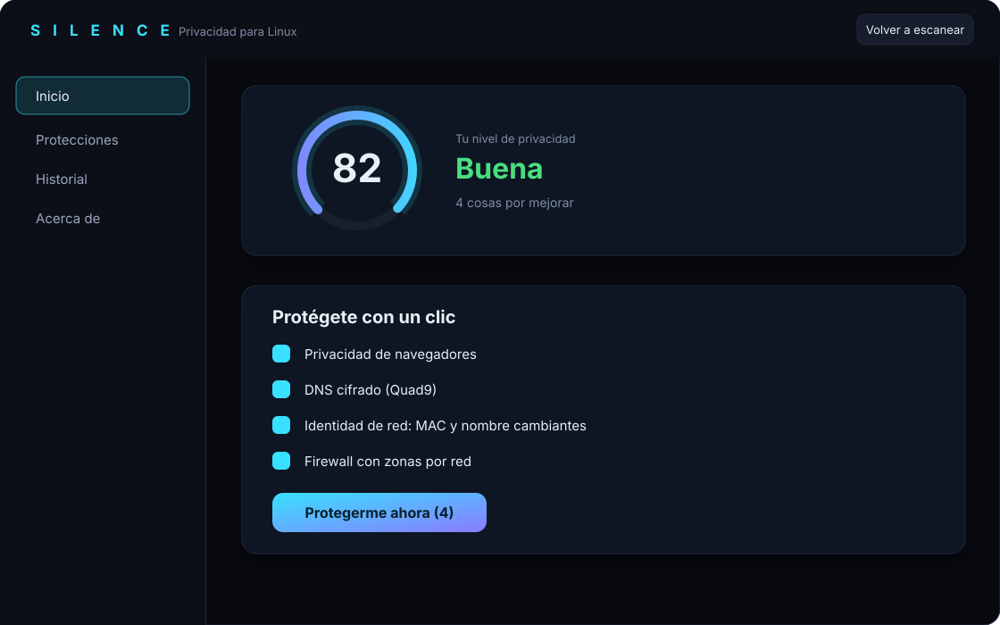

Escanea tu sistema, te explica qué información comparte tu equipo y lo arregla con tu permiso. Sin jerga, y con botón de deshacer en cada cambio.

Vista ilustrativa de la pantalla de inicio.
Linux es privado por naturaleza, pero la configuración por defecto de tu distribución, tu navegador y tu red cuenta más de lo que crees: tu nombre de equipo, tu tarjeta Wi-Fi, qué apps ven tus archivos.
Servicios y puertos abiertos, DNS, firewall, cifrado de disco, SELinux y AppArmor, navegadores, apps Flatpak, telemetría de tu distribución y endurecimiento del kernel.
Silence mira tu sistema en solo lectura y calcula tu nivel de privacidad.
Cada hallazgo viene explicado, con lo que se rompería. Si usas algo (una impresora, SSH), no te lo recomienda apagar.
Los cambios se guardan en un historial y se revierten con un clic. Si algo de red falla, vuelve atrás solo a los 30 segundos.
Firewall por zonas, DNS cifrado (Quad9 o Mullvad), IPv6 apagable y redes de confianza para tu casa.
MAC aleatoria y un nombre de equipo que cambia en cada conexión: de celular o de PC con Windows.
Firefox y Chromium sin telemetría, DuckDuckGo por defecto, modo ligero y rápido, y auditoría de extensiones.
Quita ubicación y datos de cámara de tus fotos, borra lo que tu equipo recuerda y activa el modo pánico.
Recorta los permisos de tus apps Flatpak e instala Tor Browser con un clic.
Bloquea la cámara, silencia el micrófono, endurece el kernel y revisa tus llaves SSH.
Una herramienta de privacidad que exagera te da una falsa sensación de seguridad. Estas son las limitaciones reales.
La huella DHCP no se oculta del todo. NetworkManager no permite cambiar el orden de las opciones DHCP, así que un router que identifique tu sistema por ese orden puede seguir mostrando «Linux».
KDE Connect anuncia tu equipo en la red local. Ciérralo en redes ajenas.
Con MAC aleatoria, las redes con filtro por MAC te tratarán como un equipo nuevo.
Un solo archivo para Linux x86_64 (64 bits), sin instalar nada antes. Funciona en distros con glibc 2.35 o más reciente (Ubuntu 22.04, Fedora, Debian 12, Arch…). Algunas necesitan libfuse2.
# tras descargarlo
chmod +x Silence-x86_64.AppImage
./Silence-x86_64.AppImage
La primera vez que quieras aplicar cambios, Silence te ofrece instalarse en el sistema (pide tu contraseña y muestra qué hará). Escanear funciona sin eso.
Necesitas Rust. El instalador pone el binario en /usr/local/bin como propiedad de root y una política de polkit atada a esa ruta.
# clonar y compilar git clone https://github.com/vezzulab/Silence.git cd Silence cargo build --release # instalar (pide contraseña de administrador) sudo ./packaging/install.sh # opcional: aviso diario si una actualización deshace algo systemctl --user enable --now silence-guardian.timer silence